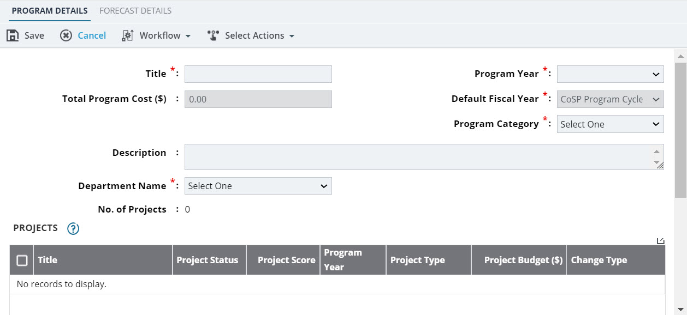

Creating a Program
- The role of the logged-in user should be one of the following:
- Director
- Fund Manager
- Manager
- Program Manager
- Support Services
- Planned projects that are in the Published workflow status or after are available. For more information on planned projects, refer to Creating a Planned Project.
- Planning funds that are in the Approved workflow status are available. For more information on planning funds, refer to Planning Fund.
-
In the module menu, click Planning.
The PLANNING DASHBOARD page is displayed.
-
In the navigation pane, click Program.
The PROGRAM list page is displayed.
-
Click New.
The PROGRAM DETAILS page is displayed.
Figure 1. Program Details Page  - In the Title field, enter the name of the program.
-
From theProgram Yeardrop-down list, select the appropriate program year.
The years available in the list are years calculated as follows:
(Current year – Program Duration (20 years)) to (Current Year + Program Duration (20 years))
You can define the program duration in the Planning Management form of the Administration module. For more information, refer to Planning Management.In the Total Program Cost ($) field, it auto-populates the amount from planned project details page.In the Default Fiscal Year field, by default, the "CoSP Program Cycle" is displayed. Available options are the fiscal years defined in the Planning Management form of the Administration module. For more information, refer to Planning Management. -
From theProgram Category drop-down list, select the appropriate category of the program.
Available options are program categories defined in theProgram Category catalog of the library.
- In theDescription field, enter the description of the program.
-
From the Department Name drop-down list, select the appropriate department associated with the program.
Available options are Engineering and Capital Improvements Administration and Water Resources Administration.The No.of Projects field displays the number of planned projects selected for the program.
-
To add planned projects to the program, in the PROJECTS section, perform the following steps:
-
Click Add.
The Select Planned Projects dialog box is displayed.
-
Select the appropriate planned projects, and then click Select.
The selected projects are added to the PROJECTS section.
-
To update the Change Type column, select the appropriate project, and then click Edit.
The Edit Projects dialog box is displayed.
-
From the Change Type drop-down list, select the appropriate option.
Available options are New, Decrease, Increase, and Timing.
-
Click Save.
The Change Type is updated
-
Click Add.
-
To associate a planning fund to the program,in thePROGRAM BUDGETsection,perform the following steps:
-
ClickAdd.
TheSelect ProgramBudget dialog box is displayed.
Available options are all the approved planning funds.
- Select the appropriate planning fund.
-
ClickSelect.
ThePROGRAM BUDGET table displays the selected planning fund and its details.The following information is displayed:
Column Name Description Fund Source The Fund Source as specified in the associated Planning Fund is displayed. Total Funds ($) The sum of the distributed amount for each fund source is displayed. [Yearly Distribution] The yearly distributed amount for each fund source is displayed. Once the selected planning fund is added to the program, the following fields are automatically updated:- Planning Funddisplays the name of the approved planning fund.
- Program Budget ($)displays the total funds available for the program.
-
To add the PWA Project, select the program budget record, and then click Edit.
The Edit Program Budget dialog box is displayed.
-
Click PWA Project, and then select the appropriate project(s).
The PWA Project list displays the projects added in the PROJECTS section.
- Click Save.
-
ClickAdd.
-
Optionally, in the ATTACHMENTS section, upload or link related files.
For information on attachments, refer to Attachments.
-
Click Save.
To perform workflow actions, refer to Program Workflow.